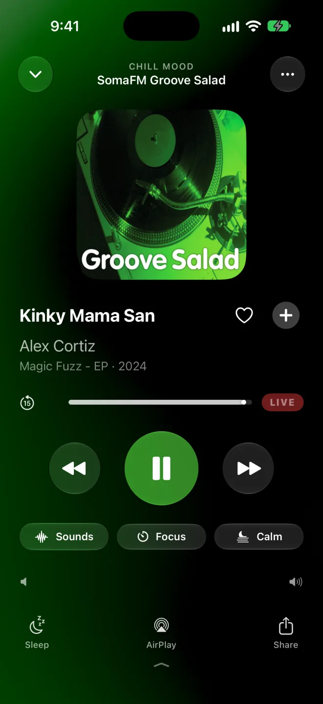
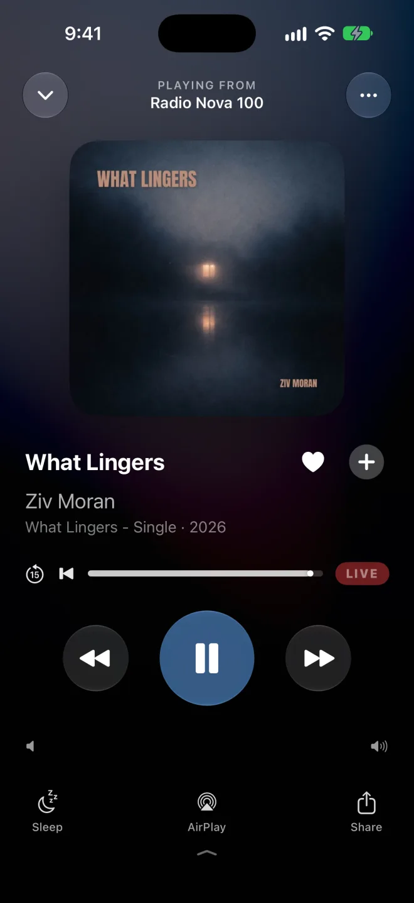
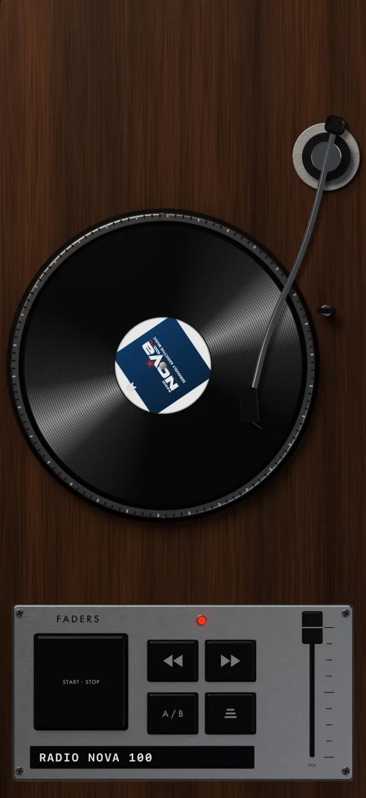
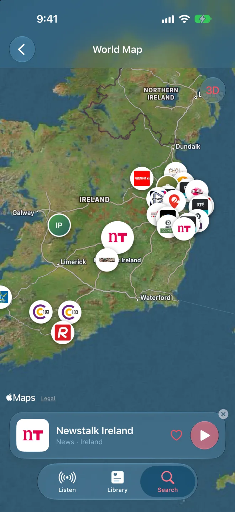
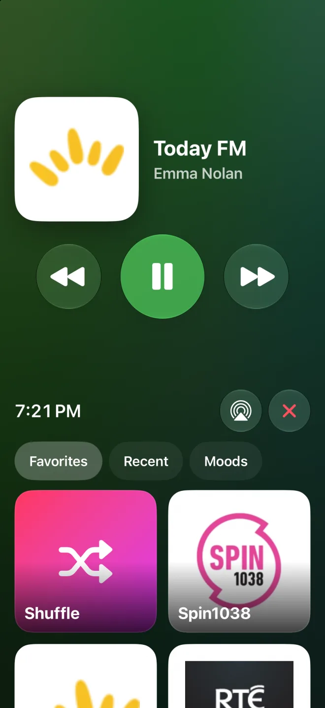
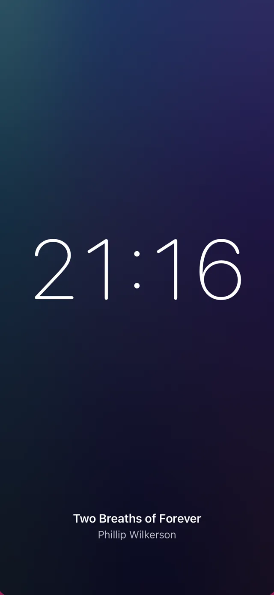
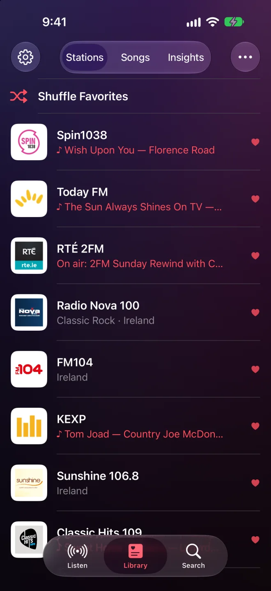
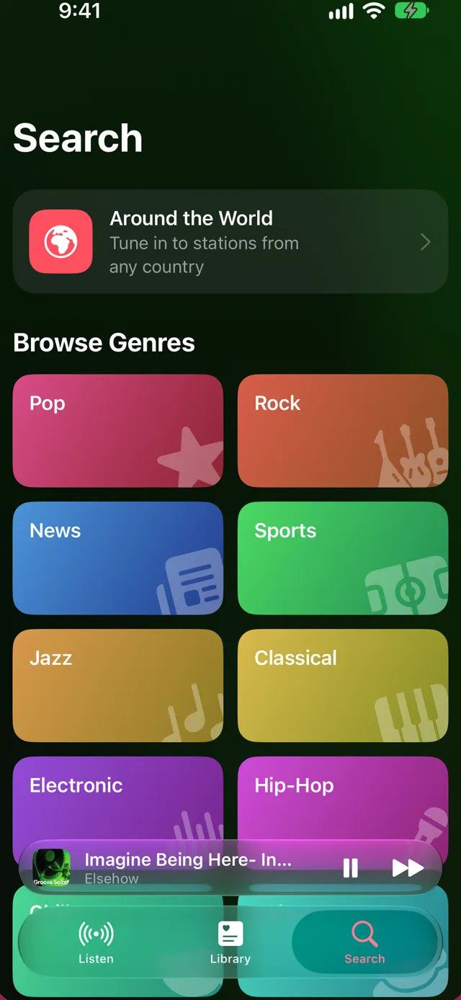
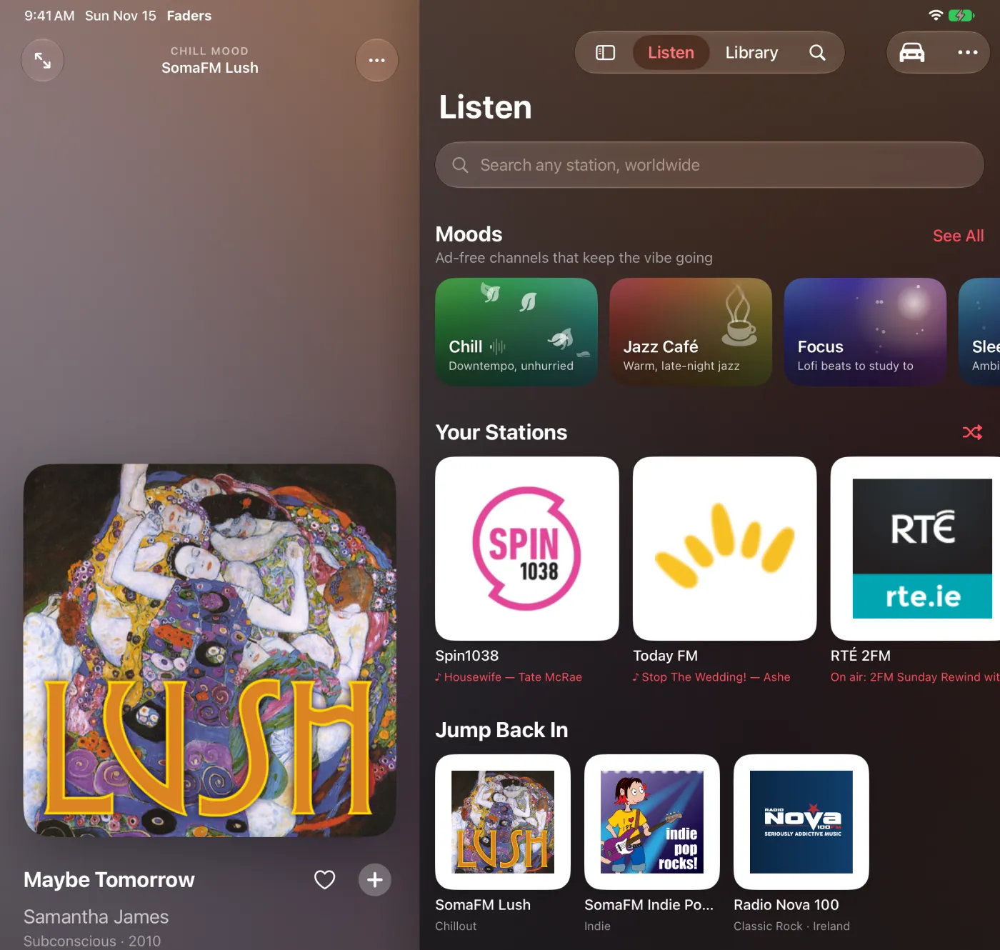

Ad-free moods
Focus, Chill, Sleep, Jazz Café, Energy, Retro.
Live radio for iPhone, iPad, CarPlay & Apple Watch
Every station on Earth. Every song named. And when your station goes to the ads, Faders changes the channel.
91.7 FM · Chill
Press play, then turn the knob
Six ad-free moods, live
Every station on Earth
50,000+ stations live in Faders. Tap the globe and we’ll drop you into one of the world’s favourites, right here.
Every song, named
Faders reads what the station sends, and when it doesn’t say, it listens and names the song itself. Title, artist, album, year, cover. Every time.
FADERS FM
songs named, just now
thank you for listening ♥


Faders Plus
Same radio, different kit. Drop the needle, push in a tape, or ride the faders on a mixing desk.
Only in Faders
Your station goes to the ads, Faders hops to one of your stations that’s playing a song, and brings you back for the next one. The station’s stream is never touched.
Your station
Another favourite
Your station is playing a song.
Stay, Change Station or Music Only, for each station · Works with your phone locked · Free
And loads more

Focus, Chill, Sleep, Jazz Café, Energy, Retro.

Spin it. Tune in where they broadcast.

Big buttons, even without CarPlay.

A bedside clock, music still playing.

What’s on before you tune in. Synced with iCloud.

Search by name, frequency or vibe.
Big screens, folding screens

Pricing
Admit everyone
Free
Faders Plus · admit one family
€4.99 once
Launch price. Goes up to €9.99 on 1 December. No subscription, ever.
No account. No tracking. Just radio, on iPhone, iPad, CarPlay and Apple Watch.
Download on theApp StoreOn a computer? Search “Faders radio” in the App Store on your iPhone.
The web player is a taste. The app is the real thing.